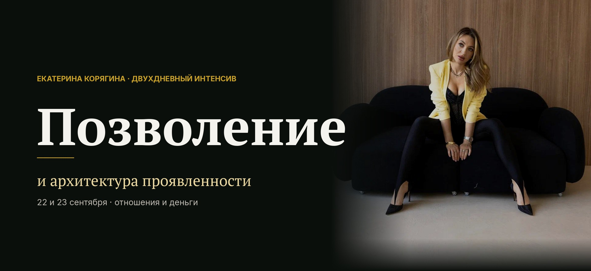

Ты в пересборке смыслов
Старое уже не отзывается, новое ещё не собралось. Внутри многое про себя понятно, снаружи пока туман.

Два дня, после которых ты знаешь, что себе позволяешь, чувствуешь это телом и держишь в руках план на отношения и на деньги.
22 и 23 сентября, Zoom и закрытый чат в Telegram. Запись остаётся.
Ты снова сказала себе «потом».
Цена на твою работу поднимается в голове и не доходит до рта. Мужчина рядом ведёт себя так, как тебе не подходит, и ты молчишь, чтобы не потерять. Идея загорается вечером и к утру гаснет.
Вслух это звучит прилично. Пока не время. Надо доучиться. Сначала дети, потом я.
А внутри стоит вопрос, который ты себе не задаёшь.
Сколько это уже длится?
Посчитай честно. Год назад ты говорила себе примерно то же самое.
Та же цифра дохода. Тот же разговор, который ты откладываешь. Тот же список желаний, куда ты каждый январь дописываешь одно и то же.
Год ещё терпимо. Так проходит пять. Так проходит пятнадцать.
И дорого здесь совсем не про деньги. Дорого то, что женщина привыкает жить в половину себя и перестаёт замечать вторую половину.
Мы имеем в жизни ровно то, что себе позволили.
Лень и мотивация тут ни при чём.
Внутри стоит запрет. Он появился раньше, чем ты научилась говорить, и звучит голосом мамы, папы, соседки и школы. Вот это можно. Вот это неприлично. Вот это не для тебя.
Дальше психика достраивает стены из вины и стыда, женщина садится внутрь и живёт там. Эти стены ты называешь своим характером.
Узнать запрет легко по следам.
Пока запрет стоит, любая техника сверху работает вполсилы.
Хорошая новость короткая. Снимается это быстрее, чем кажется.
Запрет держится зарядом в теле, знание его не берёт. Заряд проживается, и разрешение появляется в тот же день. Это первый день интенсива.
Дальше нужна архитектура. Из какой роли ты выходишь в мир, как берёшь и как отдаёшь, где проходят твои границы, что ты теперь себе позволяешь. Это второй день.
Два дня. Первый снимает запрет, второй собирает новую тебя так, чтобы она дожила до понедельника.
Для кого
Старое уже не отзывается, новое ещё не собралось. Внутри многое про себя понятно, снаружи пока туман.
Опыта и энергии достаточно. Не хватает системности и устойчивости, чтобы шагнуть в новое.
Практики, медитации, дыхание, разборы. Материя при этом стоит на месте, и это тебя злит.
Программа
Работаем сразу в двух сферах, отношения и деньги. Каждый блок заканчивается практикой, техники остаются у тебя.
Разбираем то, что держит тебя на месте, и знакомимся с собой настоящей.
Выходим из «стыдно быть богатой» и «неудобно быть успешной». Это первый слой, который годами держит доход на одной цифре.
Пока ты воюешь с местом, где стоишь, сил на движение не остаётся. Забираем их обратно.
Тот самый заряд, который включается каждый раз, когда ты собираешься в новое, и мягко возвращает тебя на базу.
Только приняв себя сегодняшнюю, ты честно увидишь, что реально себе позволяешь и что себе запрещаешь.
Быстрый сброс сдерживания через тело, тридцать секунд. Работает на саботаже, когда знаешь, что надо сделать, и не идёшь. Забираешь как навык на каждый день.
К концу первого дня ты знакомишься с собой настоящей.
Вводим новую себя в текущую жизнь и собираем маршрут, которого из старой точки не видно.
Встретились с собой настоящей, теперь вводим её в реальный понедельник, в работу, в разговоры с близкими.
Что это такое и чем он отличается от позволения. Обычно именно здесь спрятана дыра, через которую утекают деньги.
Что мир тебе даёт, как ты это берёшь и что отдаёшь взамен. Выравнивание обмена и присвоение себе того, что уже твоё.
Как ты проявляешься с партнёром, с любимым, с аудиторией, с коллегами. Находим твою ведущую роль и архетип, из которого ты идёшь в мир.
Разбираем крепость из вины и возвращаем свободу проявления. Тут же снимается внутренний запрет заявлять о себе.
Увидеть силу своего рода, снять кандалы, получить внутреннее благословение жить свою жизнь вместо обслуживания родовой программы.
Цель в отношениях и в деньгах, поставленная из новой себя. Плюс нелинейные маршруты, которые из старой точки просто не видно.
Результат
Два дня дают разрешение и инструменты. Дальше ты идёшь и делаешь, и это уже твоя часть работы.
Организация
Участие
Два дня
1963 ₽
В эту цену входят оба живых дня, все практики и техники, запись и план позволений, который ты соберёшь на втором дне.
Цена такая осознанно. Я хочу, чтобы на этих двух днях оказалась каждая, кому они сейчас нужны.
Ещё один год на том же месте стоит дороже.
Честно об опасениях
Здесь каждый блок заканчивается практикой в теле. Информацию ты и так знаешь, дело в разрешении и в проживании, а это делается только вживую.
Веду голосом, шаг за шагом. Умение чувствовать появляется прямо в процессе, отдельной подготовки не нужно.
Запись остаётся у тебя, техники работают и по ней. Разница будет только в поле живой группы.
Работаем с очень земными вещами. Стыд за деньги, границы, роли, чувство вины, отношения с отцом и матерью. Называть это можно теми словами, которые тебе удобны.
Твой ход
Через два дня ты станешь на два дня старше в любом случае.
Разница будет только в одном: останется на тебе запрет или ты его снимешь.
Первый путь знакомый. Закрыть страницу и остаться в том же объёме жизни. Там безопасно и понятно, и ты уже знаешь, чем он заканчивается.
Второй занимает два вечера. После них ты знаешь, что себе позволяешь, чувствуешь это телом и держишь в руках план.
Выбирай сердцем.
22 и 23 сентября, Zoom и закрытый чат в Telegram. Запись остаётся.
Вопросы по интенсиву пиши мне в личку @nastavnikkate.
С любовью, Екатерина